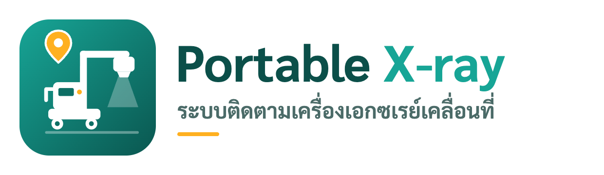

ไม่มีการเชื่อมต่ออินเทอร์เน็ต — ระบบจะกลับมาทำงานเมื่อออนไลน์

กำลังเปิดระบบ...
ติดตั้งแอป Portable X-ray
×
ติดตั้งเป็นแอปบน iPhone/iPad: แตะปุ่ม
แชร์
(สี่เหลี่ยมมีลูกศรขึ้น) แล้วเลือก
เพิ่มไปยังหน้าจอโฮม